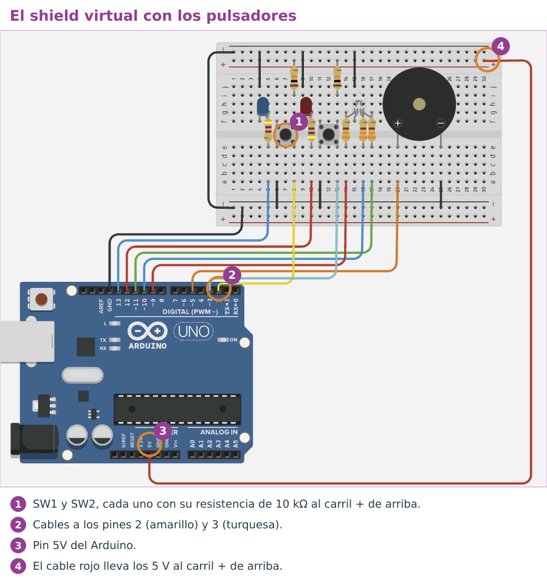
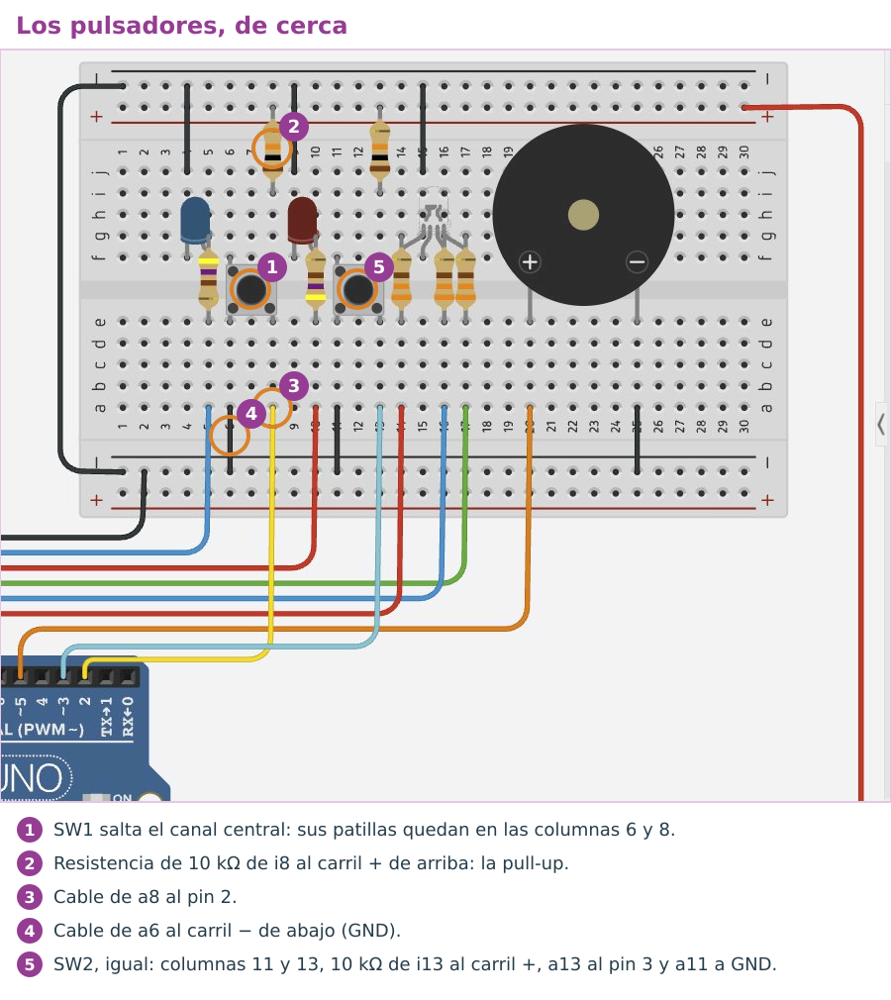
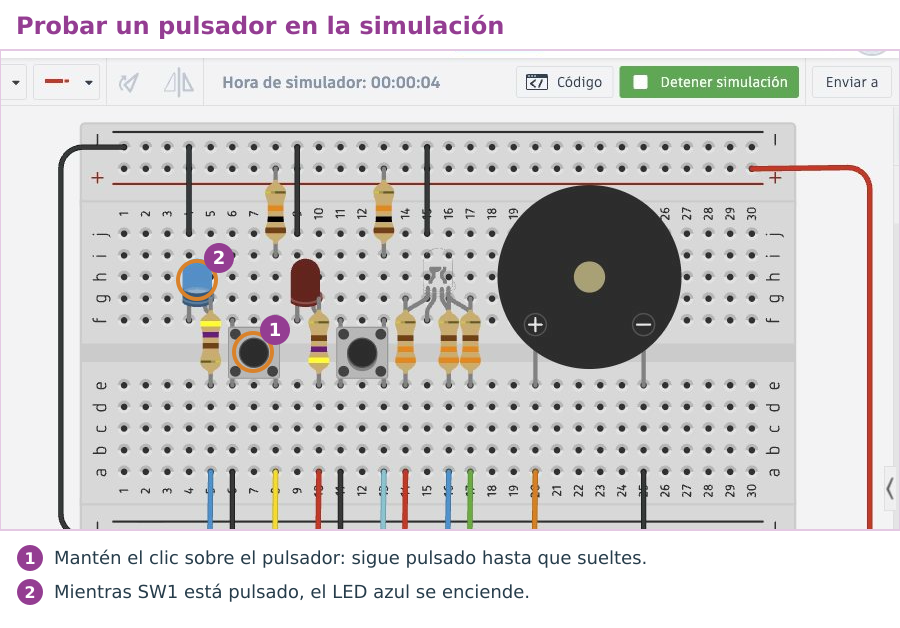

Leer un pulsador
Para que el Arduino reaccione a algo, tiene que leer una entrada. Un pulsador se lee con digitalRead(pin), que devuelve HIGH (le llegan 5 V) o LOW (le llegan 0 V).
Los pulsadores del shield son SW1 (pin 2) y SW2 (pin 3). Cada uno tiene una resistencia que lleva el pin a 5 V mientras está suelto, y al pulsarlo el pin queda unido a GND: suelto da HIGH y pulsado da LOW. SW1 está enfrente del LED azul (13) y SW2, enfrente del LED rojo (12).
Ejemplo: mientras SW1 esté pulsado, se enciende el LED azul, el que tiene enfrente
// Mientras SW1 esté pulsado, se enciende el LED azul (el de enfrente)
const int SW1 = 2;
const int LED_AZUL = 13;
void setup() {
pinMode(SW1, INPUT); // el pulsador es una entrada
pinMode(LED_AZUL, OUTPUT);
}
void loop() {
int pulsado = digitalRead(SW1); // LOW si está pulsado, HIGH si no
if (pulsado == LOW) {
digitalWrite(LED_AZUL, HIGH);
} else {
digitalWrite(LED_AZUL, LOW);
}
}Decidir: if y else
if («si») comprueba una condición. Si se cumple, hace lo que hay entre sus llaves; si no, hace lo que hay en las llaves de else («si no»). Es la regla «si… entonces…» de la unidad de electrónica digital, escrita en C.
if (pulsado == LOW) { // si el pulsador está pulsado…
digitalWrite(LED_AZUL, HIGH); // …enciende
} else { // si no…
digitalWrite(LED_AZUL, LOW); // …apaga
}==. Un solo = sirve para guardar un valor, como en int pulsado = …. Confundirlos es un error típico: el programa compila, pero no hace lo que quieres.Ahora tú. Con el programa del ejemplo, ¿qué pasa si mantienes pulsado SW1 y, a la vez, pulsas SW2?
Ver solución
Nada distinto: el programa solo lee el pin 2 (SW1). SW2 está en el pin 3 y el programa no lo mira.
Añade los pulsadores a tu Shield virtual
Abre tu Shield virtual (el original, no una copia) y añádele los dos pulsadores con su resistencia, como en el shield. Así, todas las copias que hagas desde ahora ya los tendrán.

- Coloca un Pulsador saltando el canal del centro, con sus patillas en las columnas 6 y 8 (filas e y f). Al pulsarlo, se unen las dos columnas. Coloca otro igual en las columnas 11 y 13.
- Pon una Resistencia de 10 kΩ en vertical, de i8 al carril + de arriba, y otra de i13 al carril +. Son las que llevan el pin a 5 V mientras el pulsador está suelto.
- Une con cables: a8 con el pin 2, a13 con el pin 3, y a6 y a11 con el carril − de abajo.
- El carril + de arriba todavía no tiene tensión: lleva un cable desde el pin 5V del Arduino hasta él, por el lado derecho de la placa de pruebas.

Para probarlo, duplica el Shield virtual y llama a la copia Reto R2 - Semáforo. Pega en ella el ejemplo de SW1 y el LED azul e inicia la simulación. En esa misma copia harás después el reto.

Valores intermedios: PWM
Un pin digital solo da 0 V o 5 V. Pero si se enciende y se apaga muy deprisa, cientos de veces por segundo, un LED parece lucir a medias. Esto se llama PWM y lo hacen los pines marcados con ~. La orden es analogWrite(pin, valor), con un valor de 0 (siempre apagado) a 255 (siempre encendido).
Prueba en el simulador qué pasa al cambiar el valor y el pin:
| analogWrite | Tiempo encendido | Lo que ves |
|---|---|---|
| 0 | 0 % | apagado |
| 64 | 25 % | luz tenue |
| 128 | 50 % | a media luz |
| 255 | 100 % | brillo máximo |
analogWrite solo enciende o apaga. Para graduar la luz, usa el LED RGB.El LED RGB
El LED RGB del shield son tres luces en una: rojo en el 9, verde en el 11 y azul en el 10. Mezclándolas salen otros colores: rojo y verde dan amarillo o ámbar; rojo y azul, morado; las tres a tope, blanco.
Ejemplo: tres colores con el LED RGB
// Tres colores con el LED RGB del shield
const int ROJO = 9;
const int VERDE = 11;
const int AZUL = 10;
void setup() {
pinMode(ROJO, OUTPUT);
pinMode(VERDE, OUTPUT);
pinMode(AZUL, OUTPUT);
}
void loop() {
analogWrite(ROJO, 255); // rojo a tope
analogWrite(VERDE, 0);
analogWrite(AZUL, 0);
delay(1000);
analogWrite(ROJO, 64); // rojo a la cuarta parte: más tenue
delay(1000);
analogWrite(ROJO, 255); // rojo + azul = morado
analogWrite(AZUL, 255);
delay(1000);
}Ahora tú. ¿Qué valores pondrías en los tres analogWrite para conseguir un verde a media luz?
Ver solución
Rojo 0, verde unos 128 y azul 0: analogWrite(ROJO, 0); analogWrite(VERDE, 128); analogWrite(AZUL, 0);
El reto de hoy
Reto R2 · Semáforo con pulsador para peatones
El LED RGB es el semáforo de los coches y el LED azul (13), el de los peatones. Mientras nadie pulse, los coches tienen verde. Cuando alguien pulsa SW1: ámbar durante 2 segundos, después rojo para los coches y el LED azul encendido durante 5 segundos, y vuelta al verde. Pruébalo primero en Tinkercad, en tu copia Reto R2 - Semáforo, y después en la placa.
Está conseguido cuando… en la placa, el semáforo está en verde y solo cambia cuando se pulsa SW1, con la secuencia y los tiempos pedidos.
Si te atascas: el programa con huecos
Rellena cada ____: cada hueco es una palabra, un número o un signo que ya has visto en esta página.
// Reto R2: semáforo con pulsador para peatones
const int ROJO = 9;
const int VERDE = 11;
const int AZUL = 10;
const int SW1 = 2;
const int PEATONES = 13; // LED azul: los peatones pueden pasar
void setup() {
pinMode(ROJO, OUTPUT);
pinMode(VERDE, OUTPUT);
pinMode(AZUL, OUTPUT);
pinMode(SW1, ____);
pinMode(PEATONES, OUTPUT);
}
void loop() {
// Coches en verde mientras nadie pulse
analogWrite(ROJO, 0);
analogWrite(VERDE, 255);
analogWrite(AZUL, 0);
digitalWrite(PEATONES, LOW);
if (digitalRead(SW1) == ____) { // alguien pide paso
analogWrite(ROJO, 255); // ámbar: rojo + un poco de verde
analogWrite(VERDE, ____);
delay(2000);
analogWrite(VERDE, ____); // rojo para los coches
digitalWrite(PEATONES, ____); // los peatones pasan
delay(____);
}
}Cuando funcione en la placa: enséñalo funcionando para que se anote en la lista de los retos. Después, en la tarea de Moodle Retos Arduino (código), pulsa Editar entrega (la primera vez, Agregar entrega), escribe R2 y pega debajo tu programa. Pulsa Guardar cambios. Cada reto nuevo va debajo del anterior.
tone(5, 1000); lo hace sonar y noTone(5); lo calla.| Lo que ves | Qué compruebas |
|---|---|
| El LED no se enciende nunca | ¿Has puesto pinMode en setup()? ¿Usas el pin correcto? |
| Los colores salen cambiados | Comprueba que el verde es el 11 y el azul el 10. |
| El semáforo cambia solo, sin pulsar | ¿Comparas con LOW? Suelto, el pulsador da HIGH. En Tinkercad, ¿llega la resistencia de 10 kΩ al carril + y tiene ese carril su cable de 5V? Sin ellos, el pin «flota». |
| Un pulsador no responde o lee siempre lo mismo | Mira que el shield no toque la parte metálica del conector USB de la placa: si la toca, hace cortocircuito. Sepáralo un poco o pon cinta aislante encima del USB. |
Compruébalo
Decide si cada frase es verdadera o falsa.
00:00: